Hokota, Ibaraki: things to do, food and stays
Hokota · Ibaraki
Hokota
Highlighted on the Ibaraki map.

Stay
ホテル さわや
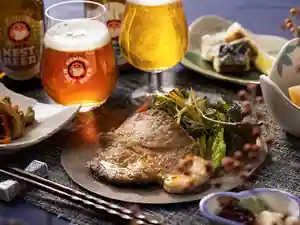
Hotel Sawaya
Hotel in Hokota with breakfast available and parking.
旅館・民宿 くるみ屋
Ryokan Minshuku Kurumi Ya
ｔａｍａ海ｔｅｒｒａｓｓｅ
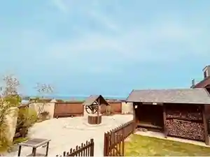
tama Umi terrasse
一組だけのお宿 すいへいせん
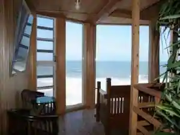
Hitokumi Dakeno Yado Suiheisen
隠れ家 四季の月
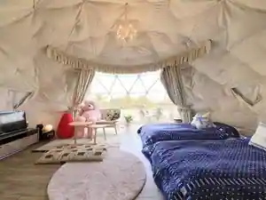
Kakure Ie Shiki No Gatsu
Inn in Uegama, Hokota with a sauna.
いこいの村涸沼
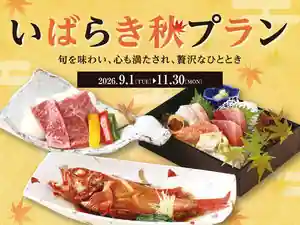
Ikoino Mura Hinuma
貸コテージスラックハウス
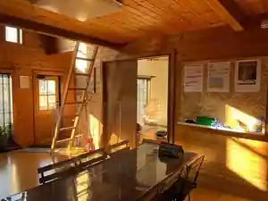
Tai Cottage Surakku House
Dining
村屋東亭
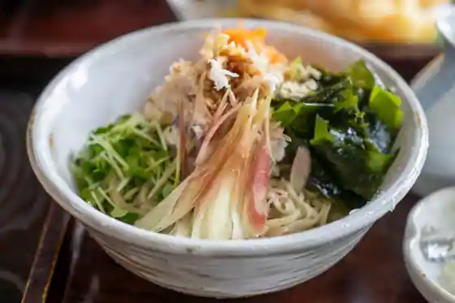
Mura Ya Higashi Tei
ギャラリー 月カフェ
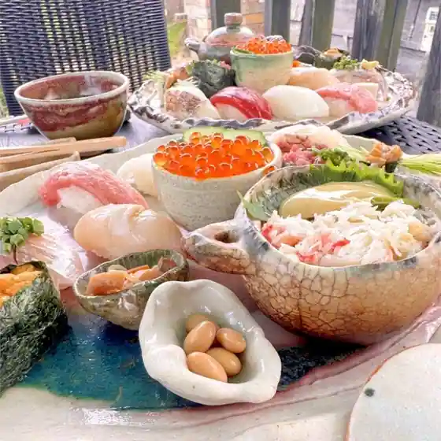
Gyarari Gatsu Cafe
FARM PATISSERIE LE FUKASAKU
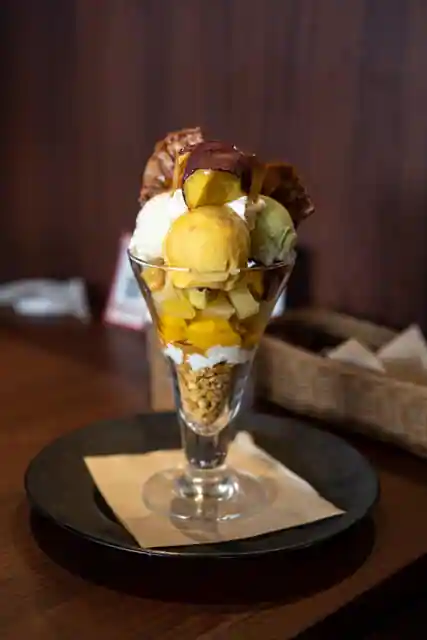
FARM PATISSERIE LE FUKASAKU
サングリーン旭
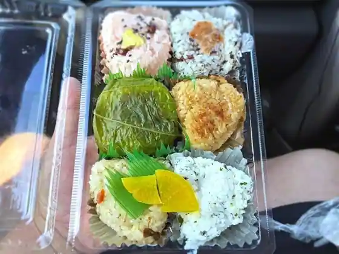
Sangurin Asahi
洋食亭ときわ
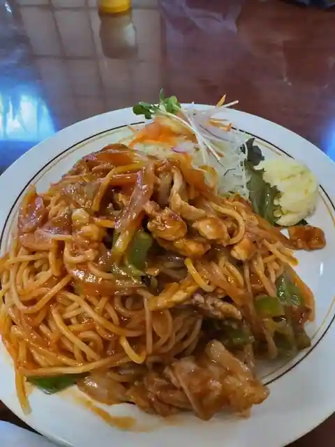
Yoshoku Tei Tokiwa
グリルあらの
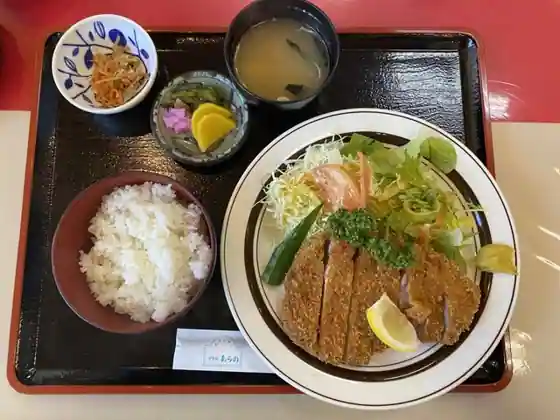
Grill Arano
とも笑
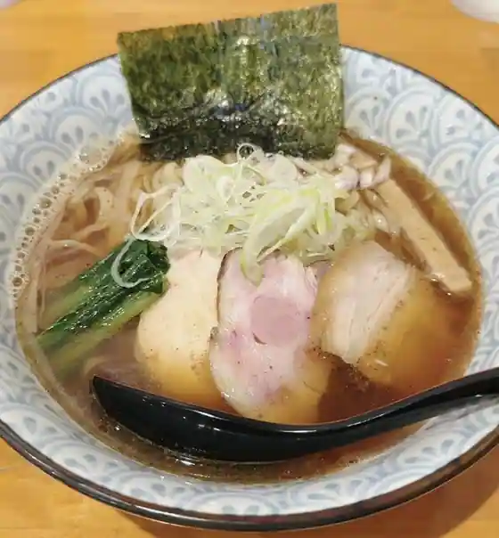
Tomo Warai
かに定
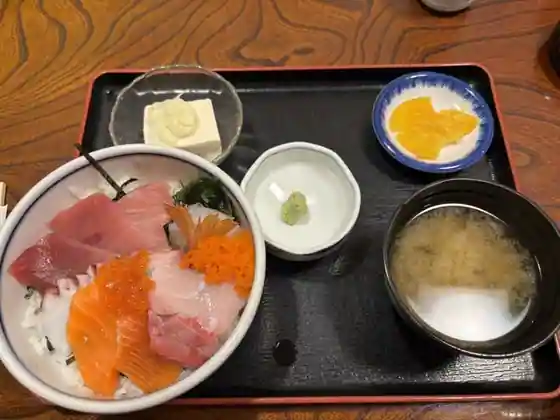
Kani Tei
Farmkuchen Fukasaku
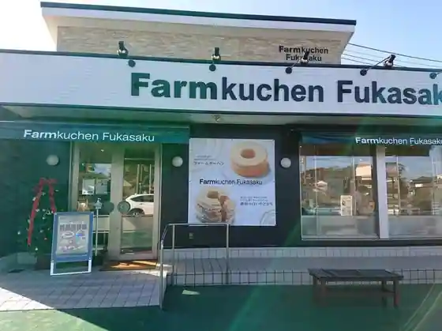
Farmkuchen Fukasaku
干しいものいいじま
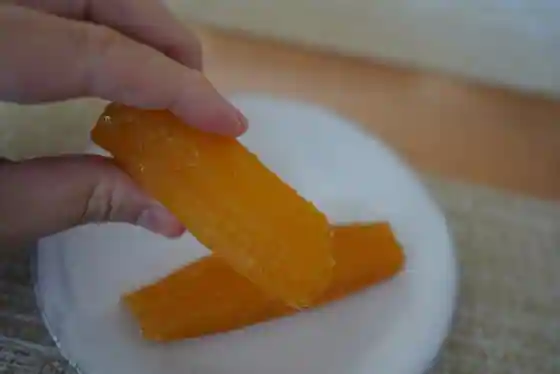
Hoshi Imonoijima
洋食ダイニング 集
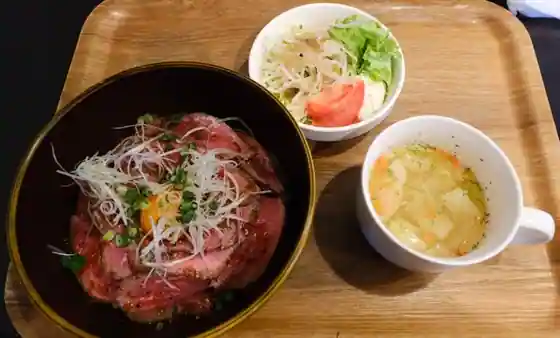
Yoshoku Dining Shu
ラーメン 奉蘭 鉾田家
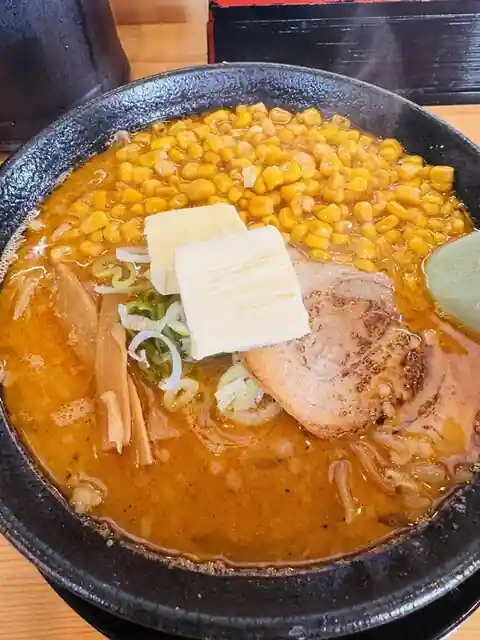
Ramen Ho Ran Hokota Ie
にんたまラーメン 旭店
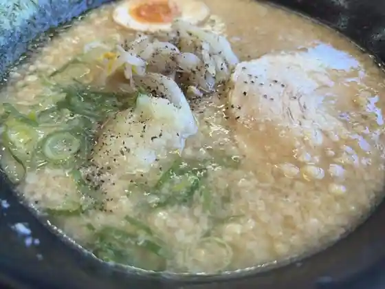
Nintama Ramen Asahi
レストラン海乃風
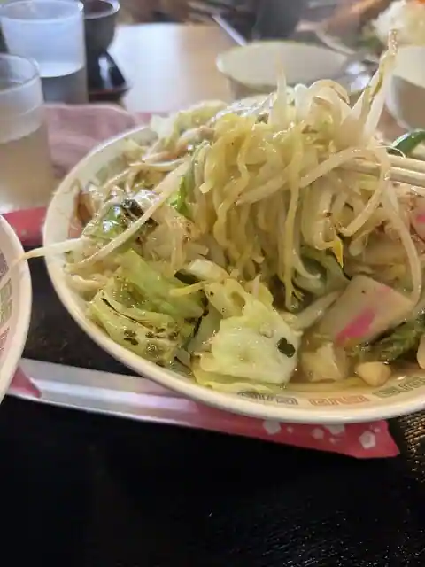
Restaurant Umi No Kaze
ニューラーメンショップ 鉾田店
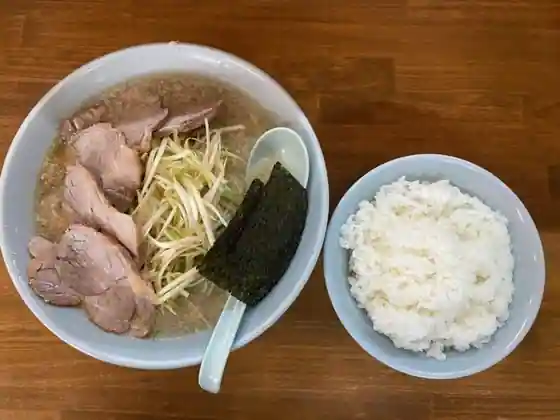
Nyu Ramen Shoppu Hokota
なかね製菓
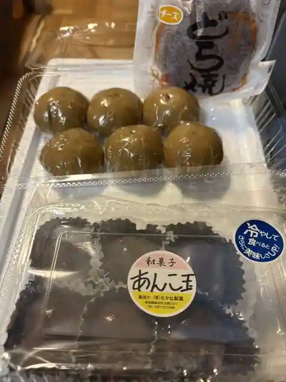
Nakane Seika
やちべえ
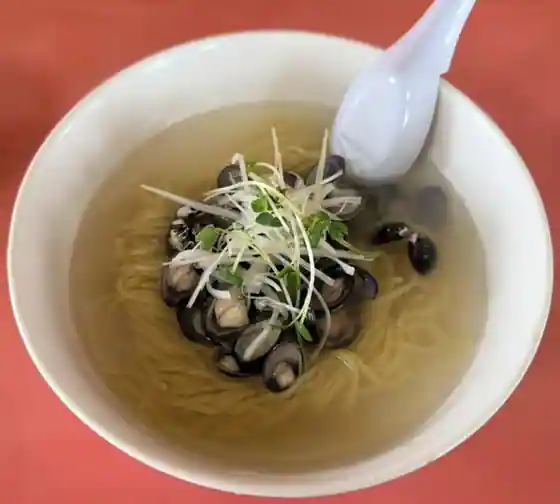
Yachibe
La Provence
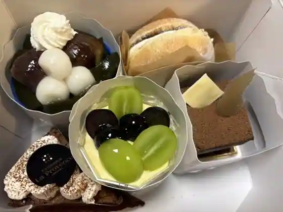
La Provence
CUP OF JOE
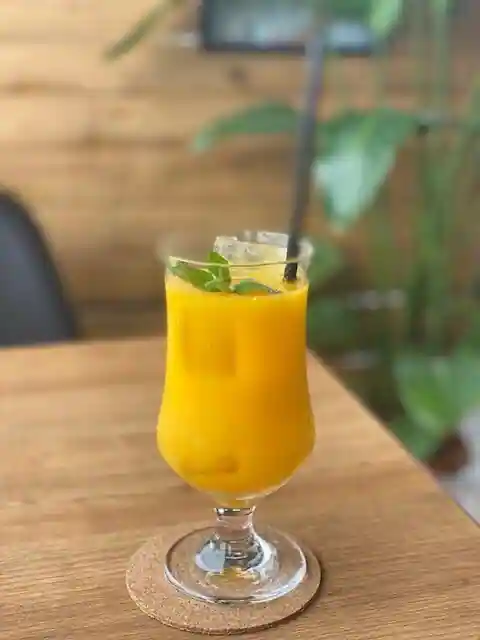
CUP OF JOE
Solamire
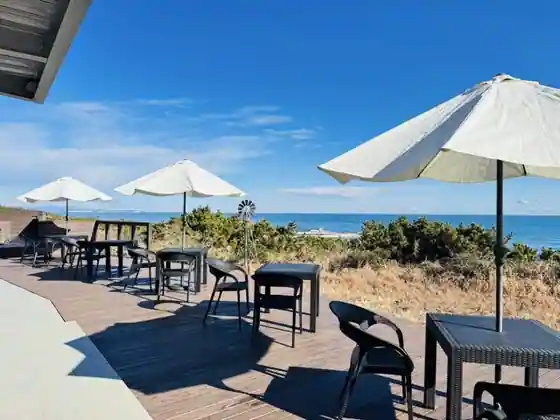
Solamire
フードカフェ ラックスストアー
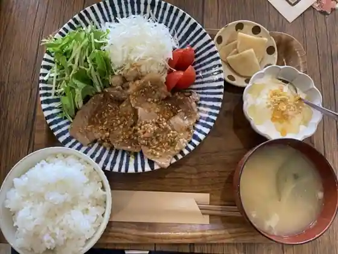
Fudo Cafe Rakkususutoa
寿や
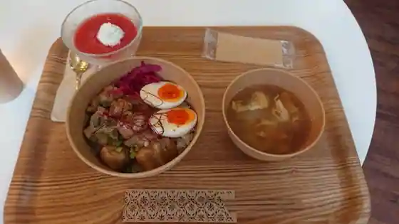
Hisashi Ya
Sights
Ikoi no Village Hinuma

Foresuto Park Meron Forest

Kashima Nada Seaside Park
Taiyo Onsen Toppu Sante Taiyo

Kashima Nada Seaside Park Chokubai Tokoro (Mogitate Market)

tama Umi terrasse
Itsukushima Jinja Honden
Fukasaku Farm
Minami Orchard Gei
JA Hokota Famazumagatto Nadaro
Mura Ya Higashi Tei
JA Ibaraki Asahi Village Chokubai Tokoro Sanguriin Asahi
Hinuma Mizutori Shitchi Center (Kansatsu Shisetsu)
Hinuma Yottohaba
Taki Hama Coast
Za Roiyaruoshan
Yasuzuka Park
Muryoju Tera
Shiraho Kantorii Club
Koi no Uma Ni Komori Shokuhin
Usami Sono
Ikeuo Kappo Yoko Ta
Hokota Rojin Fukushi Center Tomoe So